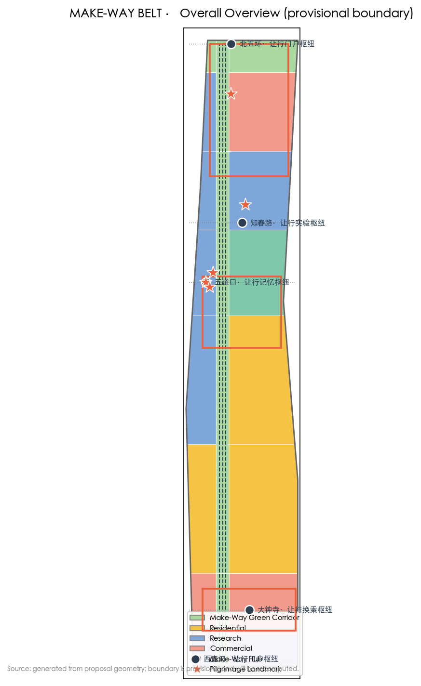
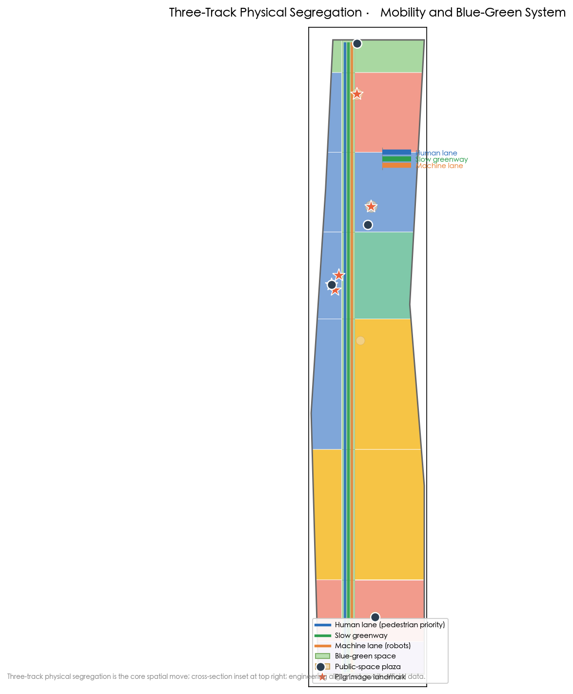

Coordinated Research 43.6 km²
World-class AI innovation ecosystem, three-areas-two-wings coupled network, AI industry and future-city form.
- MAKE-WAY naming and Logo system
- Spatialising the five functions
- Eight global AI ecosystem cases
Offline electronic display. Authoritative data is held by GeoJSON, metrics.json, the matrices and the self-check result; this page renders the overview map, three scope levels, key areas, land use, co-travel streets, blue-green space, AI scenarios, core metrics, task coverage, sources and assumptions into a human-readable visual narrative.
The make-way central spine runs north-south along the 9-km Jing-Zhang heritage green corridor; the three key areas, five make-way hubs and AI pilgrimage landmarks are overlaid in one evidence map.

Figures generated from proposal geometry (GeoJSON) in EPSG:4548; boundaries are provisional.
Coordinated research 43.6 km² → overall design 11.4 km² → key detailed-design 368.4 ha, cascading the "making way" mainline.
World-class AI innovation ecosystem, three-areas-two-wings coupled network, AI industry and future-city form.
Official "one belt, one axis, two centres, multiple nodes" × make-way layering: spine, five hubs, three-track co-travel streets.
Zhongzhiyuan·Acceleration Departure / Origin Community·Origin Yielding / Dazhongsi·Transfer Hub.
The three key areas divide work along one human-machine co-travel mainline, forming a "rules—acceleration—application" loop.
Acceleration Departure: AI full-stack five layers + FlagOS operator library + export window; embodied-AI on-street test field, AI sports training test.
Origin Yielding: rules are born here — Make-Way Rules Lab and origin-yielding plaza; smart eldercare and daily co-travel.
Transfer Hub: transport × commerce × ancient-temple culture interchange; continues the Dazhongsi 1733 precedent.
Each card states served users, spatial anchor, data/privacy boundary and human review; ≥3 are industry test/verification scenarios. All bound by the Make-Way Rules and data governance.
commuters/merchants · three-track streets · route anonymised · platform+patrol
commuting programmers · make-way spine · station data · operator+traffic
students/residents · Zhongzhiyuan · bio-signal anonymised · coach+operator
elders · Origin Community · health data anonymised · community+medical
visitors · Dazhongsi · none · museum review
merchants/visitors · 1733/satellite park · consumption anonymised · merchant self-audit
youth/developers · Wudaokou plaza · none · operator
residents · street stations · health data anonymised · medical institution
communities/parks · belt nodes · video anonymised · property+governance
enterprises · Zhongzhiyuan · enterprise data isolated · park operator
robotics firms · satellite-park test street · test logs · test committee
sports-tech firms · Zhongzhiyuan · motion data · professional coaches
autonomous-driving firms · Dazhongsi · trajectory data · traffic+third party
Land use topologically covers the submitted boundary; the make-way spine runs "human / slow / machine" three tracks in parallel, with blue-green space built on the 9-km corridor and hub plazas.

Land-use partition (residential/research/commercial/education/culture/green) and phasing: Phase 1 rules & demonstration → Phase 2 hubs & network → Phase 3 full-domain & operation; retain/renovate/demolish are concept zones pending official ownership and existing-condition data.
Origin Community Make-Way Rules Lab, Zhichun–Wudaokou demonstration three-track street.
Five make-way hubs, scenario-card landing, three-track street network.
Full-domain co-travel system, global "Make-Way Festival" and rules-community operations.
≥3 AI pilgrimage landmarks carry the cultural narrative; the Make-Way Rules as an urban public good respond to "global AI-governance voice".
Century-old memory origin; station house restored.
Science self-reliance origin and railway origin; satellite factory and northern theme plaza.
"The first classroom of making way" and the youth-community operations origin.
compliance_matrix.json covers announcement 1.3/1.4/1.5 and agent.1–agent.6; standard_matrix.json (9 standards) and design_depth_matrix.json evidence professional coverage.
Sources in sources.json (29 entries with official/cleared/background classification and usable_for_formal labels), agent_taskbook.json and standards/references. This page loads no CDN, remote tiles, external scripts, external fonts, APIs or iframes.
Pending official polygons, regulatory conditions, ownership, existing buildings and municipal conditions are listed in assumptions.json (13 entries) and expressed in the narrative as "pending official data".